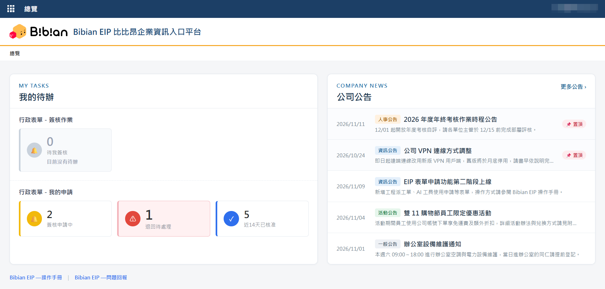
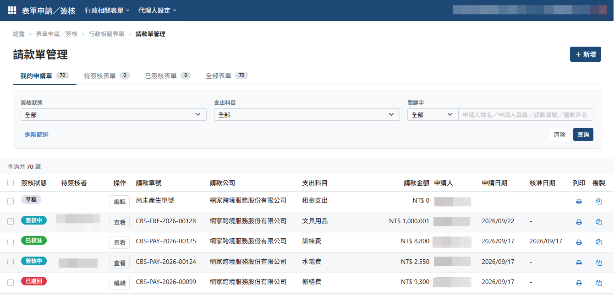
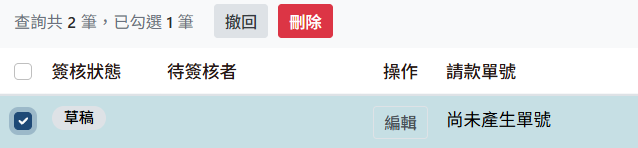
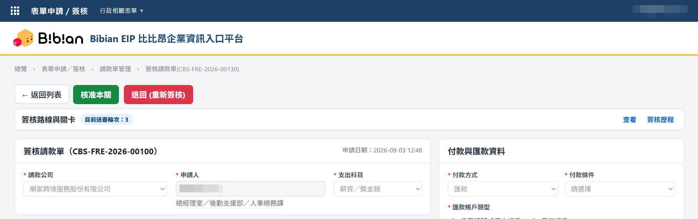
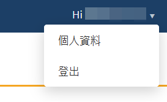

關於本手冊
本手冊說明 Bibian EIP 的共通操作方式。所有表單的列表、申請、簽核、撤回與通知規則皆相同，寫在「表單共通操作」；各表單的位置、簽核路徑與特殊規定，請查閱「表單速查」。
目前上線表單
登入系統
- 開啟 NetBird VPN，確認狀態為「Connected」（公司內外網路皆須連線）。NetBird 設定教學
- 開啟 Bibian EIP，點擊「使用 Google 登入」，以公司 Google 帳號登入。
- 登入後自動進入「總覽」頁面。
無法連線或登入？請先確認 NetBird 已連線並重新整理頁面；仍無法使用時，請聯絡系統管理員。
總覽頁面

登入後會先進入「總覽」，左側是自己的待辦，右側是公司公告。
我的待辦
卡片數字為目前符合該狀態的表單筆數（各表單合計），點擊卡片可前往對應列表。
| 區塊 | 卡片 | 內容 |
|---|---|---|
| 行政表單－簽核作業 | 待我簽核 | 目前等待自己簽核的表單；沒有時顯示「目前沒有待辦」 |
| 行政表單－我的申請 | 簽核申請中 | 已送出、仍在簽核流程中的申請 |
| 退回待處理 | 遭退回、等待自己修改後重新送出（有資料時以紅色標示） | |
| 近 14 天已核准 | 最近 14 天內完成核准的申請 |
公司公告
- 依日期顯示最新公告，標籤標示類別（人事、資訊、活動、一般公告）。
- 標示「置頂」的公告會固定顯示在最上方。
- 點擊公告標題可查看內容；點擊右上角「更多公告 ›」可查看全部公告。
頁尾連結
- Bibian EIP—操作手冊：開啟本手冊。
- Bibian EIP—問題回報：回報系統使用問題。
表單共通操作
以下操作適用於所有表單；截圖以請款單為例。
5.1 表單管理列表

| 頁籤 | 內容 |
|---|---|
| 我的申請單 | 自己建立的表單及進度 |
| 待簽核表單 | 目前等待自己簽核的表單 |
| 已簽核表單 | 自己處理過的表單 |
| 全部表單 | 依權限可存取的全部表單 |
| 操作 | 說明 |
|---|---|
| 編輯 | 修改草稿或退回的表單 |
| 簽核 | 處理等待自己簽核的表單 |
| 查看 | 查看內容與簽核歷程 |
| 列印 | 列印表單 |
| 複製 | 以既有資料建立新表單 |
| 撤回 | 狀態為「申請中」的才可撤回（申請中：代表第一個簽核關卡尚未簽核） |
| 刪除 | 狀態為「草稿」的才可刪除 |
撤回與刪除
撤回和刪除不在每筆資料的「操作」欄，而是先勾選表單，再點列表上方的按鈕。

- 在「我的申請單」勾選要處理的表單，列表上方會顯示「已勾選 N 筆」。
- 依表單狀態點擊「撤回」或「刪除」，確認後送出。
| 按鈕 | 可用狀態 | 結果 |
|---|---|---|
| 撤回 | 「申請中」 | 表單退回草稿，可修改後重新送出；原待簽核者會收到撤回通知 |
| 刪除 | 「草稿」 | 表單直接刪除，無法復原 |
提醒：勾選的表單不符合條件時，按鈕無法使用。例如上圖勾選的是草稿，只能刪除，不能撤回。
5.2 申請與送出 申請人
- 於表單管理列表點擊右上角「＋新增」。
- 依畫面填寫欄位（各表單的特殊規定請見「表單速查」）。
- 點擊「儲存草稿」暫存，或「送出簽核」進入簽核流程。
遭退回時
至「我的申請單」開啟表單，依退回原因修改後重新送出。
- 退回（重新簽核）：重新送出後，從第一關重新簽核。
- 退回（僅本關重審）：重新送出後，直接回到退回的關卡，不需重新經過前面的關卡。
5.3 簽核 簽核者
- 收到通知信後，由「總覽 → 待我簽核」或列表的「待簽核表單」頁籤進入。
- 點擊「簽核」，確認內容與附件。
- 選擇核准或退回，填寫意見後確認送出（退回時必填原因）。

| 操作 | 使用時機 |
|---|---|
| 核准本關 | 內容無誤，同意此筆申請 |
| 退回（重新簽核） | 請申請人修正，重新送出後從第一關重簽 |
| 退回（僅本關重審） | 僅部分表單的特定關卡提供，使用條件見各表單速查 |
表單詳細頁可查看目前關卡與完整簽核歷程。
5.4 通知信
表單流程有異動時，系統會寄 Email 通知相關人員。以下通知所有表單皆相同，信件標題會帶入表單名稱與單號；部分表單另有額外通知，請見各表單速查。
| 申請人收到的通知 | |
|---|---|
| 送出／重新送出 | 已成功送審 |
| 任一關卡退回 | 已遭退回，請修改後重新送審 |
| 全部關卡核准 | 已通過核准 |
| 主動撤回 | 已成功撤回 |
| 簽核者收到的通知 | |
|---|---|
| 輪到本人簽核 | 等待簽核 |
| 申請人在簽核前撤回 | 已由申請人撤回，取消簽核 |
信件標題範例：【Bibian EIP】請款單 {單號} 已成功送審
設有代理人期間，待簽核通知會改寄給代理人。
設有代理人期間，待簽核通知會改寄給代理人。
表單速查
各表單只列出位置、簽核路徑與特殊規定，操作方式同「表單共通操作」。
請款單
位置
行政相關表單 ▾ → 請款單管理
適用公司
網家跨境服務股份有限公司
簽核依據
請款總金額（含稅），未達門檻的關卡自動略過
通知信
同共通通知，無額外通知
核准後
列印已核准請款單，連同附件及單據正本送交財務單位
簽核路徑
1課級主管所有金額
→2部級主管≥ NT$3,001
→3副總經理≥ NT$10,001
→4總經理≥ NT$100,001
→5財務單位資料複核
填寫注意事項
- 付款條件選「指定匯款日」時，須另填指定匯款日期。
- 付款方式為匯款時，須選擇匯款帳戶類型與付款對象，並確認匯款資料。
- 單據須載有公司全銜、統一編號，並蓋有對方統一發票專用章或免用統一發票專用章。
- 請勿上傳個資相關資料（例如存摺封面）。
與共通流程的差異
- 退回（僅本關重審）：僅財務關卡可用，且限退回原因不涉及金額異動；涉及金額異動請使用「退回（重新簽核）」。
簽呈單
位置
行政相關表單 ▾ → 簽呈單管理
適用公司
網家跨境服務股份有限公司
簽核依據
不分金額，固定路徑；會簽單位由申請人自行設定
通知信
同共通通知；另於核准後通知知會單位主管
核准後
系統以 Email 通知知會單位主管，知會主管可於「知會我的」頁籤查看
簽核路徑
1課級主管必經
→2部級主管必經
→3會簽單位依設定順序
全數同意
→全數同意
4總經理必經
填寫注意事項
- 會簽單位：屬於正式簽核關卡。選到課由課級主管簽核，選到部由部級主管簽核。
- 知會單位：不參與簽核，核准後才會收到通知；可用「快速帶入會簽單位」一次帶入。
- 會簽、知會皆不可選擇自己所屬單位，同一清單內不可重複。
與共通流程的差異
- 列表多一個「知會我的」頁籤：顯示已核准、且自己為知會主管的簽呈單，僅可查看。
- 會簽關卡核准時，簽核意見必填（一般主管關卡為選填）。
- 簽核頁提供「簽核意見彙整」，可直接查看前面關卡的意見。
- 不提供「退回（僅本關重審）」，退回後一律從第一關重新簽核。
簽核代理人設定 簽核者
休假或出差前，可設定代理人代為簽核。位置：代理人設定 ▾ → 我的代理人。
- 於公司區塊選擇「代理簽核者」。
- 點擊「＋新增期間」，設定起訖日，按「確認新增」。
- 編輯：調整起訖日期。取消：提前停止已生效的期間（保留紀錄）。刪除：移除尚未開始的期間。
- 各公司分開設定；代理人不可為本人或其他公司員工。
登出
點擊右上角「Hi {姓名} ▾」→「登出」，即可離開系統並返回登入頁面。
